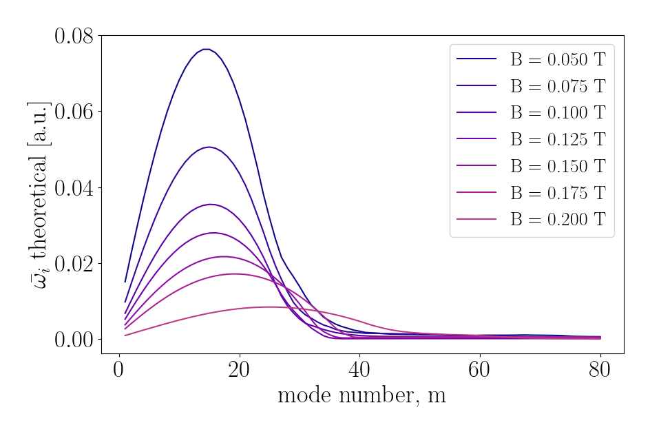
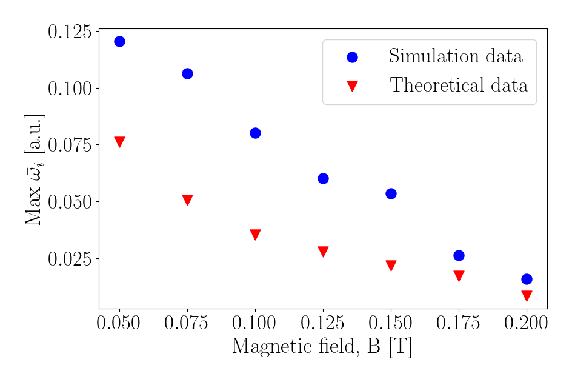
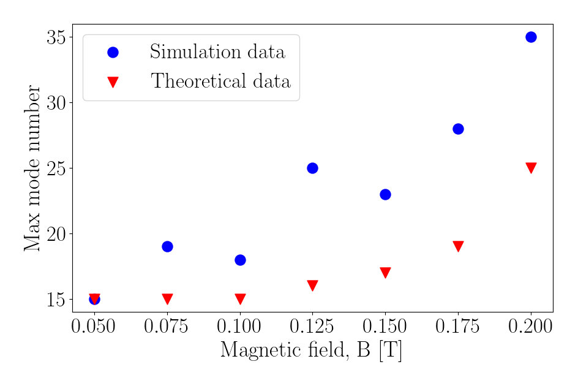

Dynamic Shear Velocity Layer Effects on Plasma Instabilities: Theory and Simulation
I. Alcaraz Aguado1, V. Muralidhara Srivatsa1, E. Gravier1, S. Heuraux1
1Institut Jean Lamour, Lorraine University, 2, allée André Guinier, 54011 Nancy, France
Motivation and Context
Motivation: Study of instabilities for the new linear radiofrequency device at Campus IJL, Université de Lorraine, called SPEKTRE [1].
Subject: Magnetized plasma column with an axial magnetic field. Kelvin-Helmholtz instabilities derived from E×B shear, characterization on the linear growth phase.
Methodology: Particle-in-Cell simulation program (OOPIC Pro [2]), where trajectories of all particles and electrostatic fields are calculated.
Parametric studies: Number density for electrons and ions, electric potential and electric field modulus (proportional to the drift velocity).
Drift velocity instabilities evolution for a magnetized plasma column prfile.
Theoretical Background
Theoretical description:Two-fluid model + Maxwell equations.
Numerically obtained profiles ⟹ More accurate results
Time evolution of a shear velocity layer profile:
Shear layer profile and width measurement.
(average ± standard deviation over the azimuthal direction)
Time evolution of the semi-analytic growth rates due to the shear velocity layer dynamics.
Rayleigh equation solution: Obtained numerically using finite differences schemes and a generalized eigenvalue problem solver.
Numerical study: A Fourier transform is performed to every circle of constant radius. This leads to an amplitude value in the Fourier space for every mode at every radius.
Data processing example:.
Cartesian coordinates - Polar coordinates - Fourier space
Fourier amplitude ( ∝ |𝑨m| ) for every perturbation mode and radius.
Growth rates dependence on the magnetic field
Solving Rayleigh equation and averaging over the linear phase of the perturbation
development, a semi-analytical value can be obtained.
Selecting the shear layer and studying the time derivative of every perturbation mode
(averaged over the same linear interval), it is possible to obtain a numerical value for
every mode’s growth rate.

Semi-analytical average growth rates for the 80 first modes in the linear instability time span (calculated for the electric potential).
Numerical average growth rates for the 80 first modes in the linear instability time span (calculated for the electric potential).

Maximum growth rate of any mode number

Mode number of the perturbation with the highest growth rate
Assessment and Prospects
The study successfully analysed Kelvin-Helmholtz instability in a simple shear-driven plasma profile.
Higher values of B lead to a better stability (lower growth rates and higher development times for the perturbations).
Shear velocity layers were influenced by charge separation due to differences in ion and electron cyclotron motion, leading to its dynamics.
Accounting for this in the analysis enabled theoretical and numerical comparison.
Theoretical limitations of the fluid model were found, as it couldn’t describe the shear layer dynamics.
Prospective work:
Study realistic SPEKTRE conditions and migrate to a kinetic model for the analytical approach.
Improving the resolution of the PIC simulation, as this study was limited by its two-month duration and personal computer level computational power.
Further Information
Detailed procedure for the data acquisition and analysis, along with the developed tools and animations at the GitHub repository:
F Brochard, D Geneve, S Heuraux, V Bobkov, D Del Sarto, E Faudot, A Ghizzo, E Gravier,
N Lemoine, M Lesur, N Louis, J Moritz, T Reveille, V Rohde, U Stroth, G Urbanczyk, F
Volpe, and H Zohm. SPEKTRE, a linear radiofrequency device for investigating edge
plasma physics. In proceedings of the 49th EPS Conference on Plasma Physics, Bordeaux,
France, July 2023.
J.P. Verboncoeur. Oopic: object oriented particle-in-cell code. In International
Conference on Plasma Science (papers in summary form only received), page 244, 1995.
Lord Rayleigh. On the stability, or instability, of certain fluid motions. Proc. London
Math. Soc., 1880.
Francis F. Chen, 1929. Introduction to plasma physics and controlled fusion. Second
edition. New York, Plenum Press, c1984.
Nicola D’Angelo. Kelvin—helmholtz instability in a fully ionized plasma in a magnetic
field. The Physics of Fluids, 8(9):1748–1750, 09 1965.